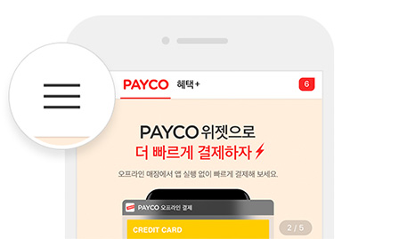

앱 설치
OTP 인증
현재단계
가입 완료
PAYCO 앱을 실행 후
더보기 > [PAYCO OTP]에서 OTP 인증해주세요.
자세히 보기
1.
OTP 인증번호 입력
OTP 인증 번호 6자리 (예. 123456)
입력한 내용 지우기
유효성 체크 메시지입니다
2.
[보기] 버튼을 누른 후, 기기 시리얼 번호 입력
기기 시리얼 번호 12자리 (예. 123456789000)
입력한 내용 지우기
유효성 체크 메시지입니다
모든 서비스에서 로그아웃합니다.
다음
OTP 인증번호 확인 방법
1.
PAYCO 앱 > 왼쪽 상단 [더보기] 버튼 터치

2.
더보기 > [PAYCO OTP] 메뉴 터치
확인
모바일 view
팝업 1